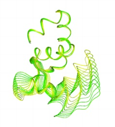

A very simple webpage.This is an "h1" level header.
This is a level h2 header.
This is a level h6 header.Pretty small!
This is a standard paragraph.
Now I've aligned it in the centre of the screen
Now aligned to the right
Bold text
Strongly emphasized text Can you tell the difference vs. bold?
Italics
Emphasized text Just like Italics!
Here is a pretty picture:
Same thing, aligned differently to the paragraph:
How about a nice ordered list!
- This little piggy went to market
- This little piggy went to SB228 class
- This little piggy went to an expensive restaurant in Downtown Palo Alto
- This little piggy ate too much at Indian Buffet.
- This little piggy got lost
Unordered list
- First element
- Second element
- Third element
Nested Lists!
- Things to to today:
- Walk the dog
- Feed the cat
- Mow the lawn
- Things to do tomorrow:
- Lunch with mom
- Feed the hamster
- Clean kitchen
And finally, how about some Links?
Or let's just link to another page on this server
Remember, you can view the HTMl code from this or any other page by using the "View Page Source" command of your browser.